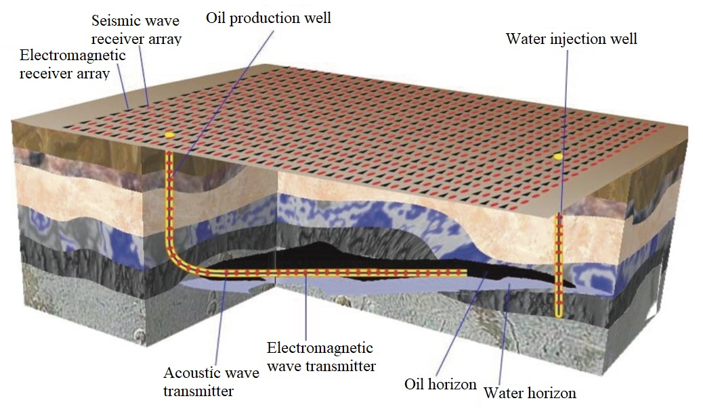

ResearchOur research is focused on computational electromagnetic imaging (CEMI). We use electromagnetic waves to detect  the unknown real world by building highly efficient mathematical models to simulate wave propagation and developing advanced inverse algorithms to reliably and rapidly reconstruct images from recorded electromagnetic signals. The major studied topics rely heavily on tools from numerical computation, optimization algorithms, probability and statistics, antenna array theory, machine learning, and geophysical exploration methods. We are currently focusing on several cutting-edge research thrusts for CEMI:
Electromagnetic Scattering And Inverse Scattering in Complex EnvironmentsElectromagnetic scattering refers to the physical process in which the incident wave interacts with specific targets immersed inside an ambient medium. Thus, the changes in wave propagation direction, amplitude, phase, and polarization recorded in sensors are highly concerning. Inverse scattering is the opposite process but is usually described by pure mathematical models. They are used to retrieve the target parameters from the sensor data. Electromagnetic scattering and inverse scattering have wide applications in artificial material design, microwave imaging, subsurface detection, geophysical exploration, etc. The real world is complicated. The electromagnetic scattering and inverse scattering usually occur in an environment filled with different media and multiple targets. On the one hand, the ambient medium is not necessarily homogeneous or isotropic. For example, in near-surface electromagnetic detection, the ambient medium is usually treated planarly stratified. Furthermore, in certain scenarios, the irregular topography also has significant effects on the scattered electromagnetic field data and thus must be incorporated into the stratification model. In space exploration via radio waves, the ionosphere is treated as a spherically stratified and anisotropic medium due to gravity and geomagnetic field. On the other hand, the targets immersed in the ambient medium and scattering the incident wave not only have complicated shapes but also can show obvious inhomogeneity and anisotropy. For example, anisotropy in the subwavelength scale and macroscopic periodicity are widely used in artificial material design to manipulate the electromagnetic wave propagation passing through and scattered back from some targets. Regarding these issues, we are working on following research directions:
Electromagnetic Full-Wave Inversion Based on Physics-Constrained Artificial Neural NetworksOptimizing Antenna Array Layout for Optimized Inversion PerformanceSubsurface Electromagnetic Imaging And Deep Earth Resource Exploration |